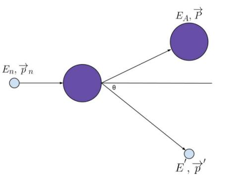
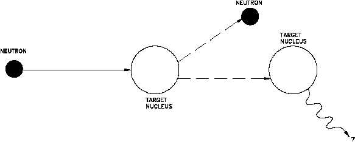
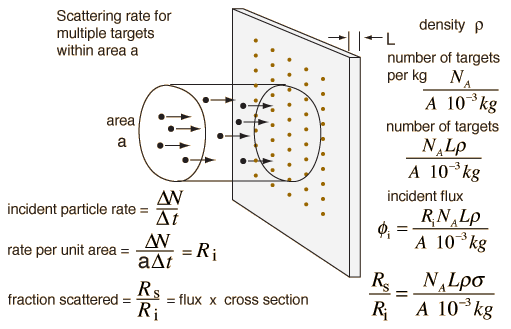
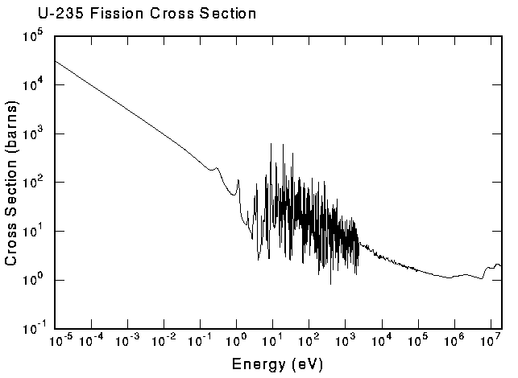
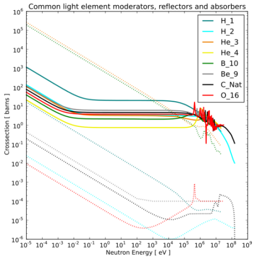
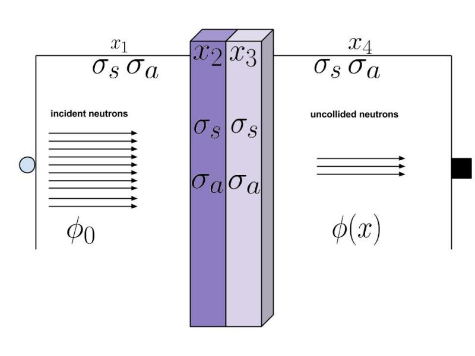

class: center, middle # NE450 ## PRINCIPLES OF NUCLEAR ENGINEERING ### Interaction of radiation with matter #### 2 ##### .right[ Bob Borrelli @TheDoctorRAB ] --- # Learning objectives Explain the different ways radiation interacts with matter Apply the concept of cross sections to neutron interactions with matter Derive neutron scattering relationships Book - Chapter 3 --- class: center,middle ### Gamma rays interact with matter in very complicated ways #### Fortunately for us we only need to know three --- ## The photoelectric effect occurs when a high energy photon knocks out an electron Interacts with entire atom Electron ejected Leaves a positively charged ion Usually an x ray emission Atom recoil carries little KE Highly probable with heavier atoms Why? --- class: center,middle  --- ## For pair production, a high energy photon creates a negatron and positron Only occurs with photon above 1.022 MeV Near the nucleus Why? Then they react with other negatrons/positrons Give off characteristic 0.511 MeV photons Only in vicinity of Coulomb field --- class: center,middle  --- ## The Compton effect is elastic scattering of a photon by an electron Energy and momentum are conserved All angles of scattering possible  hould be able to derive maximum energy CE causes problems with shielding - Why? Talk about NE class experiment --- class:center, middle  --- class: center,middle ## What is fission? --- ## What is the energy of fission from thorium and uranium fuel cycles?   ### $Q = 173.3 MeV, 185.4 MeV$ For comparison, burning a carbon atom releases 4 eV Some super heavy nuclei fission spontaneously --- ## Fission is the splitting of atoms, which releases a lot of energy  --- class: center,middle ## Neutron interactions --- ## Neutrons will pass through electron cloud and react directly with the nucleus Why?  Sometimes the compound nucleus is left in an excited state, before the reaction proceeds, but this can be a very short time What happens is highly dependent on neutron energy/temp So you do not always write the compound nucleus in the reaction expression --- class: center,middle [](http://www.citycollegiate.com/fissionXb.gif) --- ## There are several ways neutrons interact with nuclei 1. Elastic scattering (probably most important) 2. Inelastic scattering 3. Radiative capture/neutron absorption 4. Charged-particle reactions 5. Neutron producing reactions Fission (later) --- class:center, middle  --- ## With elastic scattering, the neutron strikes the nucleus, and they scatter (n,n) If you’ve ever played pool (billiards), it’s that sort of But the neutron is a lot smaller than the nucleus Kinetic energy and momentum is conserved with nucleus and neutron --- ## With elastic scattering, the neutron strikes the nucleus, and they scatter  --- ## With elastic scattering, the neutron strikes the nucleus, and they scatter (n,n) Nucleus can be at rest or moving, but neutron velocity is really faster So basically the nucleus is ‘at rest’ --- ## The neutron energy after the collision can be obtained by conservation principles  ### $E=E^{'}+E_A$ ### $\vec{p}=\vec{p}^{'}+\vec{P}$ #### $E^{'}=\frac{E_n}{(A+1)^2} \cdot [cos \theta \sqrt{A^2-sin^2 \theta}]^2$ ### $\alpha \equiv (\frac{A-1}{A+1})^2$ (p58-9) - but in any edition --- ## The concept of lethargy was invented for neutron moderation They aren't good at naming things ### $u \equiv ln \frac{E_M}{E}$ $E_M$ is the highest neutron energy in the system What is happening mathematically? --- ## The concept of lethargy was invented for neutron moderation So, lethargy increases when neutron slows down Log scale is used because neutrons have huge energy range --- ## What we really want is average log energy loss per elastic scatter/collision ### $\xi \equiv 1+\frac{\alpha}{1-\alpha}ln \alpha$ ### $\alpha \equiv (\frac{A-1}{A+1})^2$ Average change in lethargy What does this tell us? In terms of thermal reactor design? --- ## Because elastic scattering can be applied to find out how a neutron will slow down ### $\overline{n}_{COL} \equiv \frac{1}{\xi} ln \frac{E_1}{E_2}$ What is the physical interpretation? Moderation = getting high energy neutrons to low energy This means from fast moving to slow Why? This is a very fundamental reactor design constraint --- ### With inelastic scattering, it is the same as elastic, but the nucleus is left in excited state (n,n’)  Then the nucleus emits gamma rays Occurs above a certain neutron energy for each nucleus A neutron with same energy may not scatter with different nuclei Energy is lower for heavier nuclei Kinetic energy and momentum **not** conserved Compound nucleus emits lower energy neutron --- ### With radiative capture, the neutron is captured by the nucleus and gamma rays are emitted (n,gamma) This is important with reactor design (fission and fusion) Take a guess why? We also call this neutron absorption in this context Usually a low energy neutron reaction (why?) Depends on neutron energy and material Other applications include NAA, isotope production --- class: center,middle  --- ## The nucleus can also absorb a neutron and emit a charged particle (n,alpha), (n,p), etc. This can be used to design neutron detectors Part of fusion reactions Boron is used as neutron ‘poison’ and can absorb low energy (reactors, BNCT) Materials testing for fuel cladding (fusion and fission) Charged particle production could be adverse Neutron depth profiling; surface of semiconductors, etc.  --- ## A consequence of charged particle reactions is the Bremsstrahlung radiation Deceleration of the charged particle through matter A photon is emitted from interaction with the electron cloud or nucleus with the charged particle The moving particle loses energy and this is in the form of a photon aka 'braking radiation' Continuous radiation distribution Can be used to identify galaxy clusters Only one page in the text but it is important to know --- class: center,middle # Cross sections --- ## A cross section tells us basically the probability of an interaction (with something) Neutrons for us Cross sections for other events like PE, Compton People dedicate careers to establishing precise cross sections (and good for them) Cross sections are given as a hypothetical area around the target nucleus (big area, high probability) ### $1 b = 10^{24} cm^2$ Dependent on speed/energy/temperature --- ## Try to think of this as the likelihood of interaction [](https://upload.wikimedia.org/wikipedia/commons/8/83/Cross-section-illustration-simple.svg) Since there is a lot of space in between nuclei, some neutrons just fly by Radius of a nucleus $~10^{-12} cm^2$, so cross section is $~10^{-24} cm^2$ Which is where they derived barns Probability of interaction is the ratio of the total surface area of the atoms to the total area of the medium --- ## How many neutrons/s that strike a target actually interact with target nuclei? <a href="http://hyperphysics.phy-astr.gsu.edu/hbase/Nuclear/crosec.html" style="float: left"> </a> $I[\frac{n}{cm^2 \cdot s}]=[\frac{n}{cm^3}] \cdot v[\frac{cm}{s}]$ $[\frac{n}{cm^3}] \cdot v[\frac{cm}{s}] \cdot a[cm^2]=\frac{n}{s}$ $nuclei_{tar} \equiv N[\frac{nuclei}{cm^3}] \cdot a[cm^2] \cdot L[cm]$ $\frac{interactions}{s} \equiv (\sigma I)(NaL)$ So, the cross section is the probability the neutron interacts with the nucleus Section 3.2, example 3.1 --- ## Then we can define the mean free path First, macroscopic cross section is ### $\Sigma [cm^{-1}] N \sigma = \frac{\rho N_A}{A}$ Then mean free path is ### $\lambda \equiv \Sigma^{-1} [cm]$ Expected value of distance between interactions Then the interaction rate is ### $R_X = \phi \Sigma_X$ --- class: center,middle ## So how does cross section vary with temperature? ### What is physically happening? --- ## Fission cross sections have this general trend  If fission neutrons start at 2 MeV, where would you want them for a reactor? --- ## Neutron density in the thermal region follows Maxwellian distribution As fast neutrons slow down, they eventually come into thermal equilibrium with the thermal motion of the atoms in the medium through which they are moving Also called the 1/v region Resonances occur if the compound nucleus is produced in one of its characteristic excited states And the fast end is a smooth region --- class: center,middle ## $n(E) = n_0 \frac{2\pi\sqrt{E}}{(\pi kT)^{\frac{3}{2}}} \cdot e^{-\frac{E}{kT}}$ ## $n(v) = n_0 \frac{4\pi v^2}{(\frac{2\pi kT}{m})^{\frac{3}{2}}} \cdot e^{-\frac{mv^2}{2kT}}$ --- ## How does this affect reactor operation?  ---  --- ## How do you choose materials? <a href="https://sites.wrk.ru/sites/org/wi/wikimedia/upload/wikipedia/commons/thumb/e/ee/Common_light_element_moderators,_reflectors_and_absorbers.svg/760px-Common_light_element_moderators,_reflectors_and_absorbers.svg.png" style="float: left"> </a> solid = scatter dotted = absorption --- class: center,middle ## Are we good on cross sections? ---  Which flux is larger? Point source Isotropic --- ## Uncollided flux decreases exponentially with distance ### $-d\phi = \Sigma_t \phi dx$ ### $-\frac{d\phi}{\phi} = \Sigma_t dx$ Probability a neutron interacts in dx ### $\phi(x) = \phi_0 e^{-\Sigma_t x}$ Probability a neutron does not interact in x --- ## It's the same for gamma rays Shielding is material density dependent ### $\phi(x) = \phi_0 e^{-\mu x}$ Look up the mass attenuation coefficient ### $\frac{\mu}{\rho} [\frac{cm^2}{g}]$ Then just multiply mass attentuation by material density --- class: center,middle